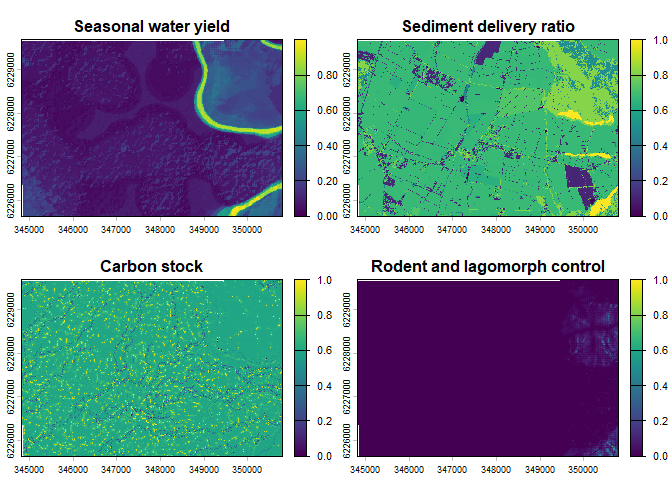
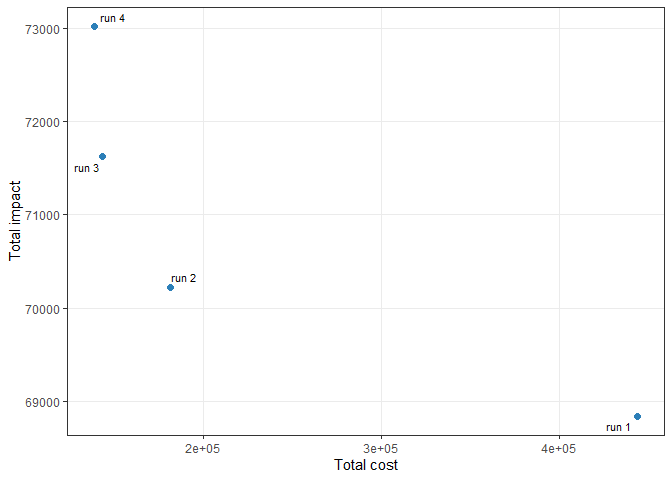
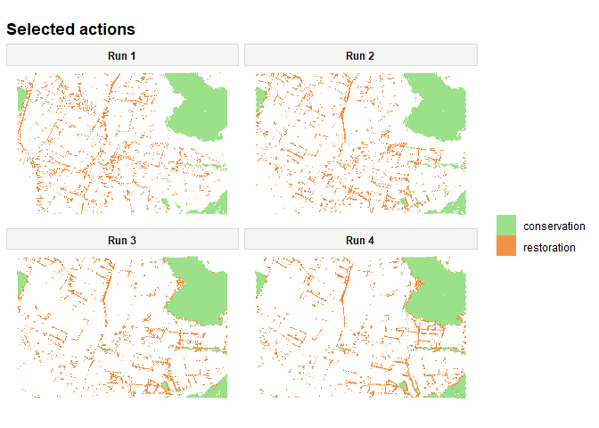

Overview
multiscape is an exact optimisation framework for multi-objective spatial planning in R. It is designed for planning problems in which spatial data, ecological or socioeconomic features, constraints, and multiple competing objectives must be considered simultaneously within a single decision-support workflow. The package is built around mixed-integer linear programming (MILP) formulations, allowing users to represent spatial planning problems explicitly as optimisation models and solve them with exact methods. This makes multiscape especially suitable for applications where transparent model structure, reproducibility, and rigorous trade-off analysis are important. multiscape supports both general spatial planning formulations and action-based formulations in which decisions are expressed as management actions applied across planning units. With it, users can build planning problems from tabular or spatial inputs, define feasible actions and their effects, add targets and other constraints, register multiple objectives such as cost, benefit, profit, or fragmentation, and explore exact trade-offs using multi-objective methods such as weighted-sum, epsilon-constraint, and AUGMECON.
Installation
The current development version can be installed from GitHub:
if (!requireNamespace("remotes", quietly = TRUE)) {
install.packages("remotes")
}
remotes::install_github("josesalgr/multiscape")Why multiscape?
multiscape brings together several key components of spatial planning in a single optimisation framework:
- exact MILP-based modelling for rigorous spatial decision support,
- multi-objective optimisation to analyse trade-offs instead of a single optimum,
- spatially explicit formulations with targets, constraints, and spatial relations,
- flexible decision structures, including both planning-unit and action-based formulations,
- and a reproducible R workflow for building and solving optimisation problems.
Core workflow
A typical multiscape workflow has five steps.
First, the user creates a Problem object from planning units, features, and baseline feature amounts. Second, the user adds feasible actions and, when relevant, defines how those actions affect the features of interest. Third, the user adds targets, constraints, and spatial relations. Fourth, the user registers one or more atomic objectives. Finally, the user solves the problem in single-objective or multi-objective mode.
In other words, multiscape separates problem definition from optimization. The Problem object stores the planning specification, and the solving stage later translates that specification into one or more exact optimization runs.
Multi-objective methods
multiscape currently supports several exact multi-objective workflows.
The weighted-sum method combines multiple registered objectives into a single scalar objective through user-defined weights. It is simple and useful for preference-driven exploration of trade-offs.
The epsilon-constraint method optimizes one objective directly while transforming the remaining objectives into explicit performance constraints. This is especially useful when one objective should be prioritised while the others are controlled through thresholds.
The AUGMECON method extends epsilon-constraint with an augmented formulation designed to reduce weakly efficient solutions and improve Pareto-front generation.
Together, these methods allow users to move beyond a single objective solution and instead analyse sets of efficient trade-off solutions.
Worked example
The example below illustrates a simple multi-objective spatial action planning problem. Some planning units can only be managed through conservation, whereas others can only be managed through restoration. The aim is to identify efficient trade-offs between total cost and impact on ecosystem services while satisfying a minimum area requirement.
Load the package and example data
library(multiscape)
library(dplyr)
library(terra)
data("sim_pu_sf", package = "multiscape")
sim_features <- load_sim_features_raster()
n_pu <- nrow(sim_pu_sf)
area_pu <- sim_pu_sf$area[1] This example considers a landscape with 30,496 planning units and four ecosystem-service layers represented in sim_features. For each unit, the model can assign one of two management actions, conservation or restoration, whenever that action is feasible. The goal is to explore the trade-off between minimizing total implementation cost and minimizing impact on the baseline ecosystem services. Instead of returning a single solution, the workflow uses an epsilon-constraint method to generate several efficient alternatives that reveal the cost-impact trade-off.
Visualise the ecosystem-service layers
These four raster layers represent the baseline ecosystem-service conditions used by the optimisation model. They define the spatial distribution of the features that are later affected by conservation and restoration actions.
terra::plot(
sim_features,
main = c(
"Rodent and lagomorph control",
"Carbon stock",
"Seasonal water yield",
"Sediment delivery ratio"
)
)
Build the base problem
We first create the base Problem object from the planning units and the feature layers.
p <- create_problem(
pu = sim_pu_sf,
features = sim_features,
cost = "cost"
)
p
#> A multiscape object (<Problem>)
#> ├─data
#> │├─planning units: <data.frame> (30496 total)
#> │├─costs: min: 0, max: 779.43
#> │└─features: 4 total ("L1_control_inv", "L1_stock_inv", "L1_rend_inv", ...)
#> └─actions and effects
#> │├─actions: none
#> │├─feasible action pairs: none
#> │├─effect data: none
#> │└─profit data: none
#> └─spatial
#> │├─geometry: sf (30496 rows)
#> │├─coordinates: 30496 rows (x: 344825.53946..350775.13398, y:
#> 6225654.6982..6229659.6982)
#> │└─relations: none
#> └─targets and constraints
#> │├─targets: none
#> │├─area constraints: none
#> │├─budget constraints: none
#> │├─planning-unit locks: none
#> │└─action locks: none
#> └─model
#> │├─status: not built yet (will build in solve())
#> │├─objectives: none
#> │├─method: single-objective
#> │├─solver: not set (auto)
#> │└─checks: incomplete (no objective registered)
#> # ℹ Use `x$data` to inspect stored tables and model snapshots.This call defines the spatial domain of the optimisation problem and tells multiscape which planning-unit attribute should be interpreted as cost. Importantly, this is still only a problem definition. The model does not yet know which actions are available, where they are admissible, how they affect the features, or which objectives should be optimised. Those elements are added explicitly in the following sections.
Printing the Problem object at this stage is useful because it provides a compact summary of the current planning specification. It lets the user verify that the planning units, features, and baseline inputs have been correctly registered before actions, effects, constraints, and objectives are added.
Define the action set
We now specify the catalogue of actions that the model is allowed to assign.
actions_df <- data.frame(
id = c("conservation", "restoration"),
name = c("conservation", "restoration")
)Here, the action set is deliberately simple and includes only two interventions: conservation and restoration. In more complex applications, the same structure can be extended to represent larger management portfolios, alternative treatment intensities, or multiple intervention types.
Derive action eligibility
Not every action is allowed in every planning unit. In this example, the variable locked_in is used to derive a simple action-eligibility rule for the illustrative dataset: one subset of planning units is only eligible for conservation, whereas the complementary subset is only eligible for restoration.
feasible_forest <- sim_pu_sf |>
sf::st_drop_geometry() |>
select(id, locked_in) |>
filter(locked_in) |>
transmute(pu = id, action = "conservation")
feasible_agro <- sim_pu_sf |>
sf::st_drop_geometry() |>
select(id, locked_in) |>
filter(!locked_in) |>
transmute(pu = id, action = "restoration")
include_df <- bind_rows(feasible_forest, feasible_agro) |>
distinct()The resulting table defines the feasible planning unit-action combinations that the optimizer is allowed to use. This is an important aspect of the action-based formulation: feasibility is not inferred automatically by the solver, but is instead encoded directly by the user as part of the planning specification. In other words, the optimisation model can only allocate actions where they have been declared admissible.
Specify action effects
We next specify how actions affect the features.
effects_mult <- data.frame(
action = rep(c("conservation", "restoration"), each = 4),
feature = rep(
c("L1_control_inv", "L1_stock_inv", "L1_rend_inv", "L1_reten_inv"),
times = 2
),
multiplier = 1
)This table assigns an effect to every action × feature combination. Because effect_type = "delta" will be used later, the values are interpreted as action-induced changes relative to the baseline feature representation. In the present example, the same multiplier (1) is assigned to all combinations, so the ecological response is intentionally kept simple: both conservation and restoration are assumed to contribute with the same relative magnitude across all four features.
This means that, in this README example, the difference between the two actions comes mainly from where they are eligible and how much they cost, rather than from different ecological effect strengths. In a more realistic application, one would often use different multipliers by action and feature, for example making restoration stronger for some features and weaker, neutral, or even negative for others.
Define action-specific costs
Costs are attached to planning unit-action combinations so that the model can compare interventions not only by their ecological consequences, but also by their local implementation burden.
action_cost_df <- sim_pu_sf |>
sf::st_drop_geometry() |>
transmute(
pu = id,
action = ifelse(locked_in, "conservation", "restoration"),
cost = cost
) |>
semi_join(include_df, by = c("pu", "action"))This representation is useful in action-based planning because the same planning unit may imply different costs depending on the intervention that is permitted or selected. By storing costs at the planning unit × action level, the optimisation problem can evaluate trade-offs in a more realistic way than with a single uniform planning-unit cost.
Add constraints and objectives
Once actions, eligibility, effects, and costs have been defined, we can complete the optimisation model.
target_area <- n_pu * area_pu * 0.20
p <- p |>
add_actions(actions = actions_df,
cost = action_cost_df,
include = include_df) |>
add_effects(effects = effects_mult,
effect_type = "delta") |>
add_objective_min_cost(alias = "Total cost",
include_pu_cost = FALSE,
include_action_cost = TRUE) |>
add_objective_min_intervention_impact(alias = "Total impact") |>
add_constraint_targets_relative(0) |>
add_constraint_area(area = target_area,
sense = "min") |>
add_constraint_locked_pu(locked_in = "locked_in",
locked_out = "locked_out") The call to add_actions() links the action catalogue to the admissible allocation table and the action-specific cost table. The call to add_effects() then tells the model how these actions modify the tracked features. After that, the optimisation problem is completed by combining constraints and objectives.
The minimum-area constraint imposes a lower bound on the amount of land to be selected, ensuring that the solution represents a non-trivial intervention effort. In this example, the area threshold is expressed in area units rather than as a simple count of planning units, which is why the code multiplies the target number of selected units by the area represented by one planning unit in the example dataset. The registered objectives define the trade-off of interest: one objective minimizes total action cost, while the other minimizes intervention impact. The epsilon-constraint method is then used to generate a set of efficient alternatives rather than a single solution.
Configure the epsilon-constraint method and solver
p <- p |>
set_method_epsilon_constraint(
primary = "Total impact",
n_points = 4,
mode = "auto",
lexicographic = TRUE
) |>
set_solver_cbc(gap_limit = 0.1)
p
#> A multiscape object (<Problem>)
#> ├─data
#> │├─planning units: <data.frame> (30496 total)
#> │├─costs: min: 0, max: 779.43
#> │└─features: 4 total ("L1_control_inv", "L1_stock_inv", "L1_rend_inv", ...)
#> └─actions and effects
#> │├─actions: 2 total ("conservation", "restoration")
#> │├─feasible action pairs: 30496 feasible rows
#> │├─action costs: min: 0, max: 779.43
#> │├─effect data: 105537 rows
#> │├─effect mode: benefit only
#> │└─profit data: none
#> └─spatial
#> │├─geometry: sf (30496 rows)
#> │├─coordinates: 30496 rows (x: 344825.53946..350775.13398, y:
#> 6225654.6982..6229659.6982)
#> │└─relations: none
#> └─targets and constraints
#> │├─targets: 4 rows
#> │├─target preview: "L1_control_inv" >= 0, "L1_stock_inv" >= 0, "L1_rend_inv" >=
#> 0
#> │├─area constraints: 1 ([all] min)
#> │├─budget constraints: none
#> │├─planning-unit locks: 5407 units (3988 locked-in, 1419 locked-out)
#> │└─action locks: none
#> └─model
#> │├─status: not built yet (will build in solve())
#> │├─objectives: 2 registered (Total cost, Total impact)
#> │├─method: epsilon_constraint (primary: Total impact)
#> │├─solver: cbc
#> │└─checks: ok
#> # ℹ Use `x$data` to inspect stored tables and model snapshots.Printing p again after adding actions, effects, constraints, and objectives helps confirm that the problem has moved from a base spatial specification to a fully defined optimisation model ready to be solved.
Solve and inspect the results
res <- solve(p, process = TRUE)
plot_tradeoff(res, label_runs = TRUE)
The resulting SolutionSet can be used to compare efficient alternatives both numerically and spatially. The trade-off plot helps assess how the solutions balance the competing objectives, whereas the spatial action maps show where conservation and restoration are allocated in each efficient solution. This is particularly valuable because different Pareto-efficient solutions may achieve similar totals while distributing actions very differently across the landscape.
If desired, the spatial outputs can also be rendered with a consistent manual palette to improve visual comparison across solutions. For example:
plot_spatial_actions(
res,
fill_values = c(
restoration = "#f38b3d",
conservation = "#97df83"
),
runs = c(1, 2, 3, 4),
base_alpha = 0.0
)
The resulting SolutionSet can be used to compare efficient alternatives both numerically and spatially. The trade-off plot helps assess how the solutions balance the competing objectives, whereas the spatial action maps show where conservation and restoration are allocated in each efficient solution. This is particularly valuable because different Pareto-efficient solutions may achieve similar totals while distributing actions very differently across the landscape.
Why this example matters
This example illustrates one of the main strengths of multiscape: spatial planning problems can be formulated in terms of management actions, action-specific effects, feasibility rules, constraints, and multiple competing objectives. Rather than returning only a single optimum, the package can generate and analyse alternative efficient solutions that reveal trade-offs relevant for decision-making.
Learn more
To explore the package further, see the function reference on the package website and the documentation of key functions such as create_problem(), add_actions(), add_effects(), add_constraint_targets_relative(), and solve().
For multi-objective workflows, the most relevant functions are set_method_weighted_sum(), set_method_epsilon_constraint(), and set_method_augmecon().
If you find a bug or want to suggest an improvement, please open an issue at: